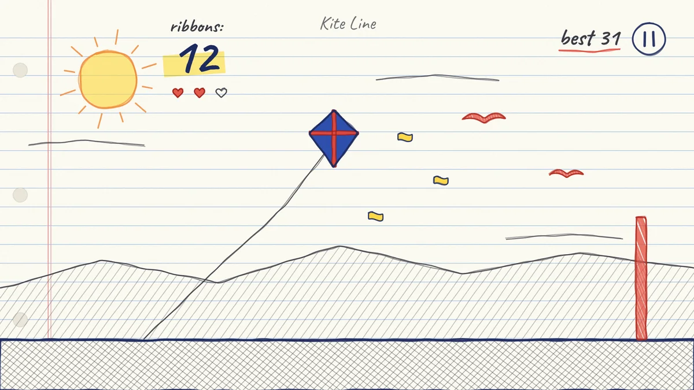
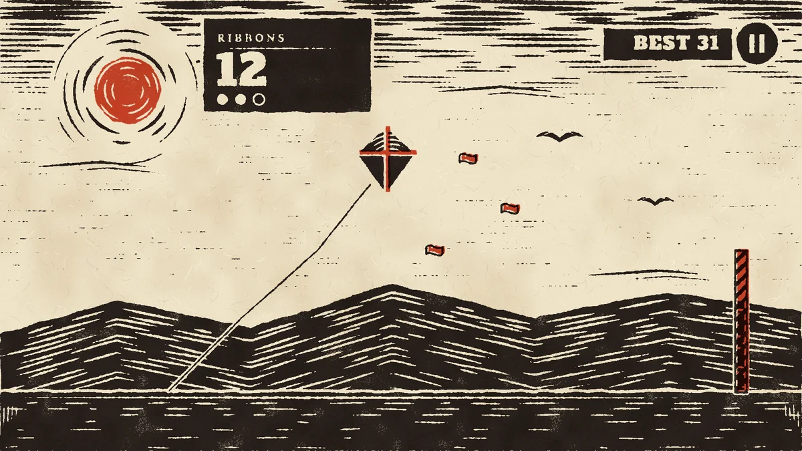
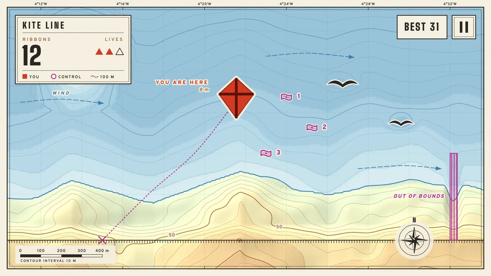
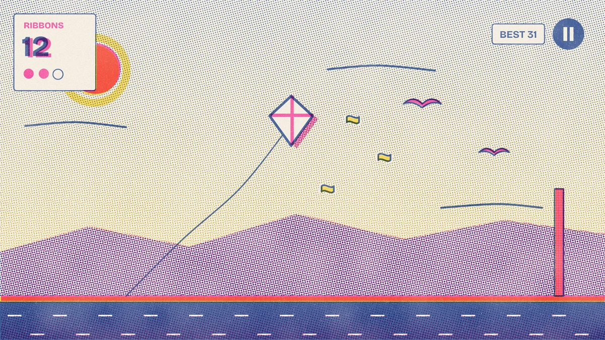
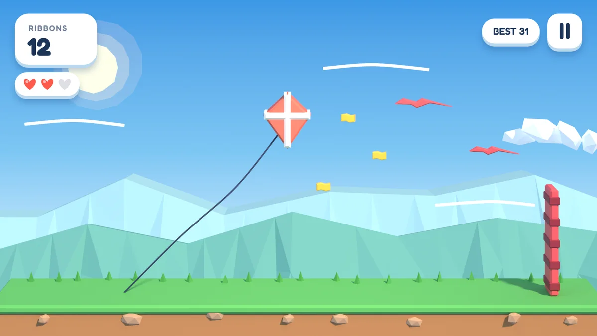
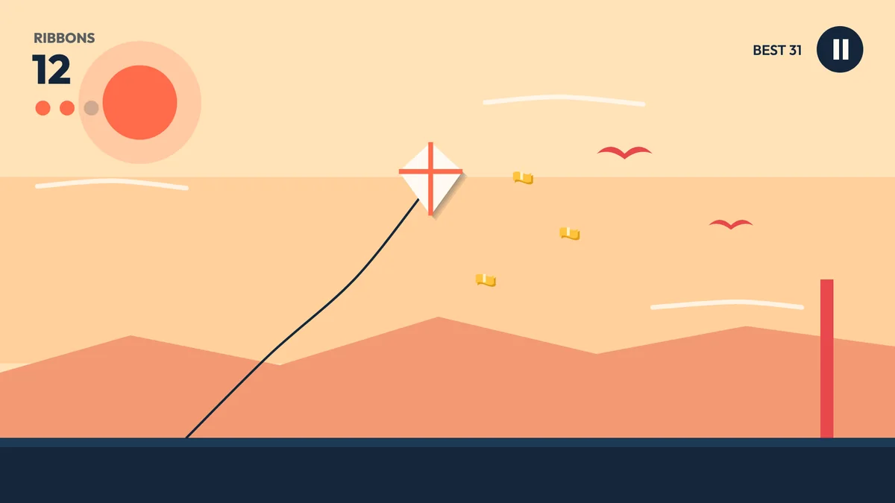
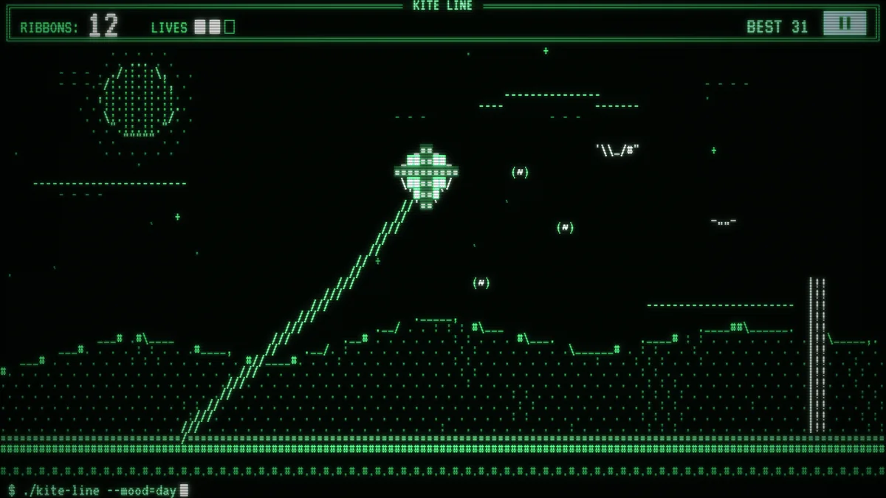

14 · Notebook Sketch recommendedpicked
Kite Line is a doodle that flies: wobbly pen lines, a highlighter ribbon and ruled paper make one thumb and one string feel personal and light.
Style atlas / Kite Line
7 looks from the GITCRAFT style atlas, each rendered as the same moment from this product. Nothing is built until a design is picked.
Picked: Notebook Sketch (picked)

Kite Line is a doodle that flies: wobbly pen lines, a highlighter ribbon and ruled paper make one thumb and one string feel personal and light.

A carved print turns the wind into gouge strokes and the kite into a folk emblem; heavy ink gives the gulls real menace against cream paper.

The flight read as a course over a map: contours for the hills, a magenta line for the string, ribbons as numbered controls. Calm and clever.

Two inks and a misregistered kite make every run look like a festival flyer; good for a bright, playful, poster-like game.

A toy kite over a faceted valley, rendered in Blender: depth and sunlight, a chunky physical kite you want to tap.

The most legible at thumbnail size: a white diamond on a peach sky with hard colour bands; quick to read mid-gust.

The surprise: the kite as a glowing glyph on a phosphor screen, the wind as scrolling characters. A strange, memorable way to fly a kite.